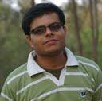

|  |
Kunal Banerjee
Research Scholar (PhD Student) Department of Computer Science and Engineering Indian Institute of Technology Kharagpur Address : Research and Project Lab, Room No. 118, Ground Floor, CSE Building Department of Computer Science and Engineering, IIT Kharagpur, West Bengal 721 302, INDIA. Phone: +91-3222-281431 Email: kunalb [at] cse [dot] iitkgp [dot] ernet [dot] in [My CV] |
| Year | Session | Subject | Teacher |
| 2014 | Autumn | Programming & Data Structures (Theory) | Prof. Soumyajit Dey |
| Spring | Programming & Data Structures (Theory) | Prof. Niloy Ganguly | |
| 2013 | Autumn | Discrete Structures | Prof. Animesh Mukherjee |
| Spring | Programming & Data Structures (Theory) | Prof. Partha Bhowmick | |
| 2012 | Autumn | Theory of Computation | Prof. Goutam Biswas |
| Spring | Computer Architecture and Operating Systems | Prof. Dipankar Sarkar | |
| 2011 | Spring | Formal Systems | Prof. Sujoy Ghose |
| 2010 | Autumn | Discrete Structures | Prof. Sudeshna Sarkar |
| Spring | Programming & Data Structures (Lab) | Prof. Goutam Biswas | |
| 2009 | Autumn | Computer Organization & Architecture (Lab) | Prof. Indranil Sengupta, Prof. Dipankar Sarkar, Prof. Chittaranjan Mandal, Prof. Debdeep Mukhopadhyay |
|
|
Last updated: Feb 24, 2016. |